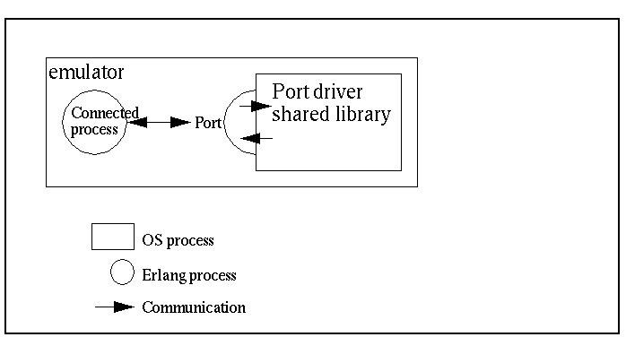

View Source Port Drivers
This section outlines an example of how to solve the example problem in Problem Example by using a linked-in port driver.
A port driver is a linked-in driver that is accessible as a port from an Erlang program. It is a shared library (SO in UNIX, DLL in Windows), with special entry points. The Erlang runtime system calls these entry points when the driver is started and when data is sent to the port. The port driver can also send data to Erlang.
As a port driver is dynamically linked into the emulator process, this is the fastest way of calling C-code from Erlang. Calling functions in the port driver requires no context switches. But it is also the least safe way, because a crash in the port driver brings the emulator down too.
The scenario is illustrated in the following figure:

Erlang Program
Like a port program, the port communicates with an Erlang process. All communication goes through one Erlang process that is the connected process of the port driver. Terminating this process closes the port driver.
Before the port is created, the driver must be loaded. This is done with the
function erl_ddll:load_driver/2, with the name of the shared library as
argument.
The port is then created using the BIF open_port/2, with the
tuple {spawn, DriverName} as the first argument. The string SharedLib is the
name of the port driver. The second argument is a list of options, none in this
case:
-module(complex5).
-export([start/1, init/1]).
start(SharedLib) ->
case erl_ddll:load_driver(".", SharedLib) of
ok -> ok;
{error, already_loaded} -> ok;
_ -> exit({error, could_not_load_driver})
end,
spawn(?MODULE, init, [SharedLib]).
init(SharedLib) ->
register(complex, self()),
Port = open_port({spawn, SharedLib}, []),
loop(Port).Now complex5:foo/1 and complex5:bar/1 can be implemented. Both send a
message to the complex process and receive the following reply:
foo(X) ->
call_port({foo, X}).
bar(Y) ->
call_port({bar, Y}).
call_port(Msg) ->
complex ! {call, self(), Msg},
receive
{complex, Result} ->
Result
end.The complex process performs the following:
- Encodes the message into a sequence of bytes.
- Sends it to the port.
- Waits for a reply.
- Decodes the reply.
- Sends it back to the caller:
loop(Port) ->
receive
{call, Caller, Msg} ->
Port ! {self(), {command, encode(Msg)}},
receive
{Port, {data, Data}} ->
Caller ! {complex, decode(Data)}
end,
loop(Port)
end.Assuming that both the arguments and the results from the C functions are less
than 256, a simple encoding/decoding scheme is employed. In this scheme, foo
is represented by byte 1, bar is represented by 2, and the argument/result is
represented by a single byte as well:
encode({foo, X}) -> [1, X];
encode({bar, Y}) -> [2, Y].
decode([Int]) -> Int.The resulting Erlang program, including functions for stopping the port and detecting port failures, is as follows:
-module(complex5).
-export([start/1, stop/0, init/1]).
-export([foo/1, bar/1]).
start(SharedLib) ->
case erl_ddll:load_driver(".", SharedLib) of
ok -> ok;
{error, already_loaded} -> ok;
_ -> exit({error, could_not_load_driver})
end,
spawn(?MODULE, init, [SharedLib]).
init(SharedLib) ->
register(complex, self()),
Port = open_port({spawn, SharedLib}, []),
loop(Port).
stop() ->
complex ! stop.
foo(X) ->
call_port({foo, X}).
bar(Y) ->
call_port({bar, Y}).
call_port(Msg) ->
complex ! {call, self(), Msg},
receive
{complex, Result} ->
Result
end.
loop(Port) ->
receive
{call, Caller, Msg} ->
Port ! {self(), {command, encode(Msg)}},
receive
{Port, {data, Data}} ->
Caller ! {complex, decode(Data)}
end,
loop(Port);
stop ->
Port ! {self(), close},
receive
{Port, closed} ->
exit(normal)
end;
{'EXIT', Port, Reason} ->
io:format("~p ~n", [Reason]),
exit(port_terminated)
end.
encode({foo, X}) -> [1, X];
encode({bar, Y}) -> [2, Y].
decode([Int]) -> Int.C Driver
The C driver is a module that is compiled and linked into a shared library. It
uses a driver structure and includes the header file erl_driver.h.
The driver structure is filled with the driver name and function pointers. It is
returned from the special entry point, declared with the macro
DRIVER_INIT(<driver_name>).
The functions for receiving and sending data are combined into a function,
pointed out by the driver structure. The data sent into the port is given as
arguments, and the replied data is sent with the C-function driver_output.
As the driver is a shared module, not a program, no main function is present.
All function pointers are not used in this example, and the corresponding fields
in the driver_entry structure are set to NULL.
All functions in the driver takes a handle (returned from start) that is just
passed along by the Erlang process. This must in some way refer to the port
driver instance.
The example_drv_start, is the only function that is called with a handle to
the port instance, so this must be saved. It is customary to use an allocated
driver-defined structure for this one, and to pass a pointer back as a
reference.
It is not a good idea to use a global variable as the port driver can be spawned by multiple Erlang processes. This driver-structure is to be instantiated multiple times:
/* port_driver.c */
#include <stdio.h>
#include "erl_driver.h"
typedef struct {
ErlDrvPort port;
} example_data;
static ErlDrvData example_drv_start(ErlDrvPort port, char *buff)
{
example_data* d = (example_data*)driver_alloc(sizeof(example_data));
d->port = port;
return (ErlDrvData)d;
}
static void example_drv_stop(ErlDrvData handle)
{
driver_free((char*)handle);
}
static void example_drv_output(ErlDrvData handle, char *buff,
ErlDrvSizeT bufflen)
{
example_data* d = (example_data*)handle;
char fn = buff[0], arg = buff[1], res;
if (fn == 1) {
res = foo(arg);
} else if (fn == 2) {
res = bar(arg);
}
driver_output(d->port, &res, 1);
}
ErlDrvEntry example_driver_entry = {
NULL, /* F_PTR init, called when driver is loaded */
example_drv_start, /* L_PTR start, called when port is opened */
example_drv_stop, /* F_PTR stop, called when port is closed */
example_drv_output, /* F_PTR output, called when erlang has sent */
NULL, /* F_PTR ready_input, called when input descriptor ready */
NULL, /* F_PTR ready_output, called when output descriptor ready */
"example_drv", /* char *driver_name, the argument to open_port */
NULL, /* F_PTR finish, called when unloaded */
NULL, /* void *handle, Reserved by VM */
NULL, /* F_PTR control, port_command callback */
NULL, /* F_PTR timeout, reserved */
NULL, /* F_PTR outputv, reserved */
NULL, /* F_PTR ready_async, only for async drivers */
NULL, /* F_PTR flush, called when port is about
to be closed, but there is data in driver
queue */
NULL, /* F_PTR call, much like control, sync call
to driver */
NULL, /* unused */
ERL_DRV_EXTENDED_MARKER, /* int extended marker, Should always be
set to indicate driver versioning */
ERL_DRV_EXTENDED_MAJOR_VERSION, /* int major_version, should always be
set to this value */
ERL_DRV_EXTENDED_MINOR_VERSION, /* int minor_version, should always be
set to this value */
0, /* int driver_flags, see documentation */
NULL, /* void *handle2, reserved for VM use */
NULL, /* F_PTR process_exit, called when a
monitored process dies */
NULL /* F_PTR stop_select, called to close an
event object */
};
DRIVER_INIT(example_drv) /* must match name in driver_entry */
{
return &example_driver_entry;
}Running the Example
Step 1. Compile the C code:
unix> gcc -o example_drv.so -fpic -shared complex.c port_driver.c
windows> cl -LD -MD -Fe example_drv.dll complex.c port_driver.cStep 2. Start Erlang and compile the Erlang code:
> erl
Erlang (BEAM) emulator version 5.1
Eshell V5.1 (abort with ^G)
1> c(complex5).
{ok,complex5}Step 3. Run the example:
2> complex5:start("example_drv").
<0.34.0>
3> complex5:foo(3).
4
4> complex5:bar(5).
10
5> complex5:stop().
stop